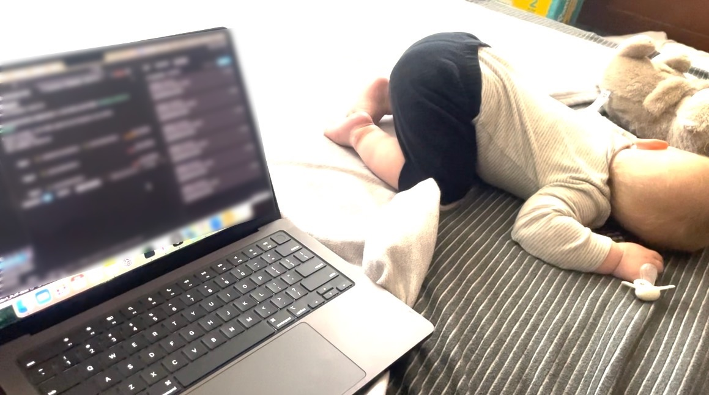

Are you spending enough for the life you want?
Or holding back because the future feels unknowable? Make it a bit more known. Enter some numbers, move them around, and see where they lead.
Free to try. No account, nothing to link, your numbers stay on your device. The full version is $39 if you want to go deeper.
What you can afford to live on, and how sure you can be of it.
How much you can spend.
Most calculators ask what you'll spend and check whether it lasts. This one starts from what you have and finds the most you could spend each year and still make it to the end.
Both versions of a decision.
Take the two years off, or don't. Pay off the house, or invest the money. The chart shows both paths at the same time, and the gap between them is what the decision costs.
A range of outcomes.
Your plan runs through every stretch of the market since 1926, and through 500 simulated futures if you want them. A plan that lasts through 51 of 52 stretches is a different thing from one that lasts through 30, and you can see which one you have.
If we don't save every spare dollar, are we still okay?
I've always been good at saving and bad at spending. Even when the numbers said we were fine, I didn't feel it. On maternity leave I wanted to know whether we could afford for me not to go back to work, and I couldn't find a tool that showed me in a way I understood, at a price I'd pay. So I built one. It told me we could live on one salary, but that stopping now would add about ten years of working at the end of my career. I finally understood what the decision could cost. Then my husband got laid off. I put the new numbers in and realized there was no need to panic.
I was looking for a number that is safe in every future, but I learned there isn't one. What I got instead was the range, and how much each choice moves it. I chose to keep working. I work from home with my kid here, and we spend more on a nanny so I can. It gave me a way to look at a decision and see what it would do, and that has helped me let go of needing to over save out of fear. It is giving me the confidence to spend enough on our life today instead of saving all of it for later. I hope it can do the same for you.
Hannah, the founder

It tests your plan against every market since 1926.
You enter what you have, what comes in, what goes out, and when you'd like to stop working. Every assumption behind the result can be changed, the stock and bond mix, fees, tax rates, and the spending guardrails included.
The tool runs your numbers three ways. Historical mode replays your plan through every stretch of real US market returns since 1926, so you can see how it would have gone if you'd started in 1929, or 1966, or 2000. Simulated mode runs your plan through randomized futures, 500 unless you change it, with the average return and volatility of your mix, and you can change those too. Fixed mode uses one steady return every year, which is what most calculators do, so you can see the difference.
Try it free. Pay once if you want to go deeper.
There's no account to create and no subscription to remember to cancel. Your numbers are safe since nothing you type is sent anywhere.
Free
- Historical mode, your plan run through every market period since 1926, with the chart and the historical analysis.
- Your numbers, including how long to plan for, and all seven what-if scenarios.
- The spending explorer, which shows how that changes at each spending level.
- The assumptions behind the result, open to change: stock and bond mix, fees, tax rates, and the guardrails.
Full version $39
Everything in Free, plus:
- Simulated mode, which runs randomized futures, and Fixed mode, which uses one steady return.
- The spending, retirement age, or savings that would get a plan over the line.
- Two decisions side by side on one chart.
- Up to 8 saved scenarios, with notes.
- Five stress tests that start your plan in a known bad stretch, 1929 and 1966 among them.
- Best and worst outcomes, spending flexibility, Social Security timing, and a cashflow chart.
- Filing status, your state, and traditional, Roth, and taxable accounts with the order you draw from them.
- Add one-time financial events like an inheritance or a large purchase.
- A change in spending later in life, mortgage payoff, income growth, and Social Security timing.
- A printable one-page report, and the year-by-year table as a spreadsheet.
By purchasing you agree to the Terms of Service.
Not for you? Full refund within 14 days, no questions asked.
What it leaves out.
It's not advice and it's not a planner. It doesn't know your taxes beyond a rough estimate, and it doesn't know your life. It's a way to see the shape of the outcomes so you can have a better conversation, with yourself or with a professional.
It doesn't model healthcare costs before Medicare, required minimum distributions, or Roth conversions. If you're optimizing those, you want a subscription planner. If you want to get a sense of how different scenarios could play out, this is built for that.
Get a note when something new ships.
An email when something meaningful changes, and nothing else. No list-sharing, unsubscribe any time.
Your email is the only thing we collect, and only if you type it here. The app itself stores nothing on a server.